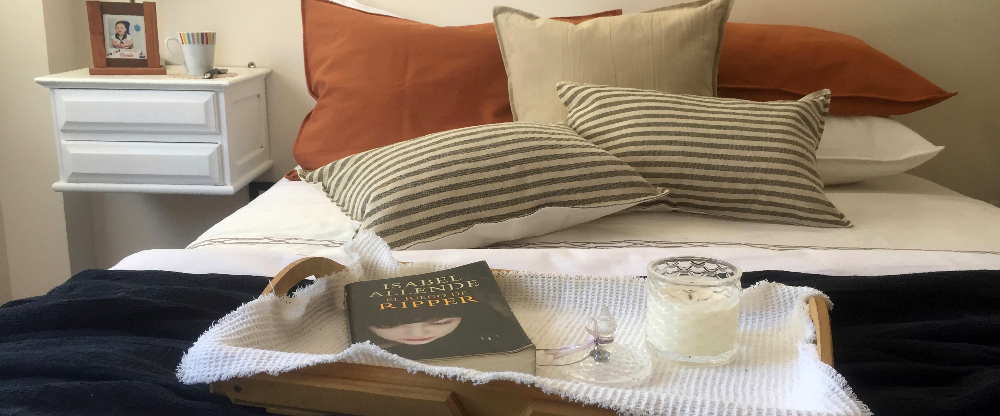

In quis quam in ipsum ornare tempor. Mauris sapien lorem, ultrices sit amet eros vel, rutrum hendrerit sapien. Praesent a leo vitae augue elementum vulputate a eget neque. Ut vel eros id lectus euismod tempus.
Confección hecha con atención a cada detalle para crear un espacio hogareño relajante.
El tusor es una tela pesada y resistente. Se usa para la confección de fundas de sillón, sillas, cortinas, acolchados y más.

Almendras es un pequeño estudio de diseño donde la alta calidad de telas y confeccion, elecciones responsables y la promoción de proyectos que puedan tener un impacto positivo en la calidad de nuestra vida cotidiana son tres objetivos principales.